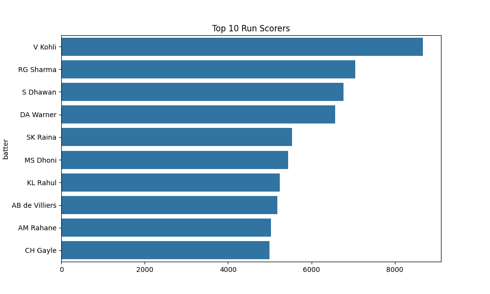
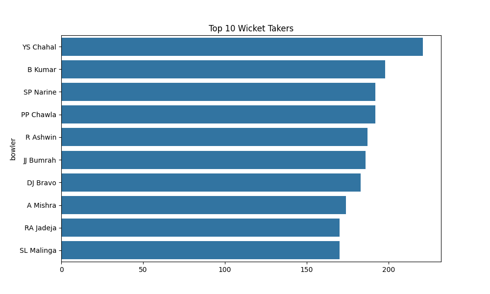
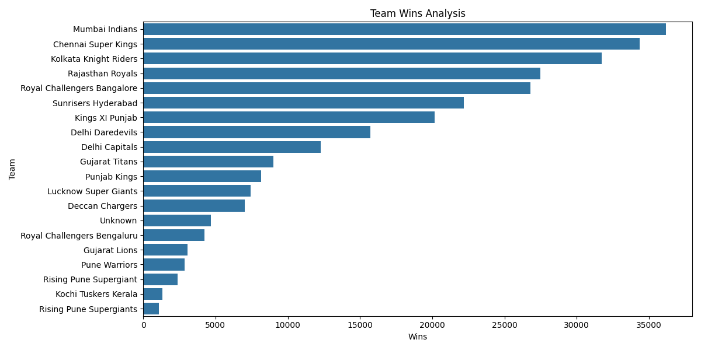
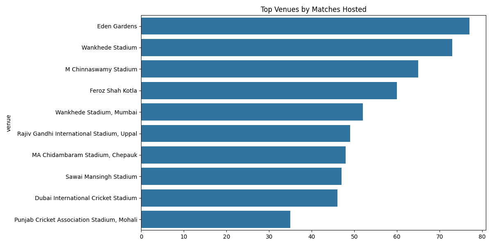
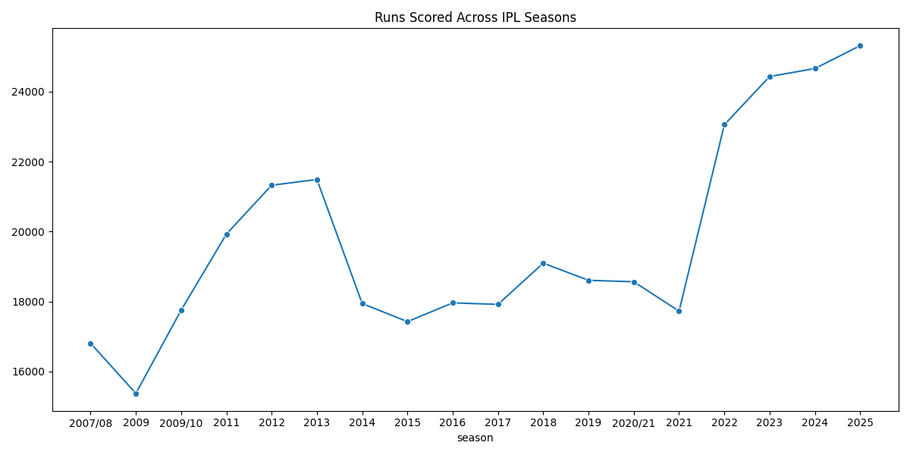

Total Seasons
18
Total Teams
18
Total Players
1000+
Total Matches
1500+
Top 10 Run Scorers

Top 10 Wicket Takers

Team Wins Analysis

Venue Analysis

Season Analysis

Analyze Player Performance, Team Records, Venue Statistics and Season Trends
This dashboard analyzes IPL data from multiple seasons using Python, Pandas, NumPy, Matplotlib and Seaborn.
The project provides insights into:
18
18
1000+
1500+




